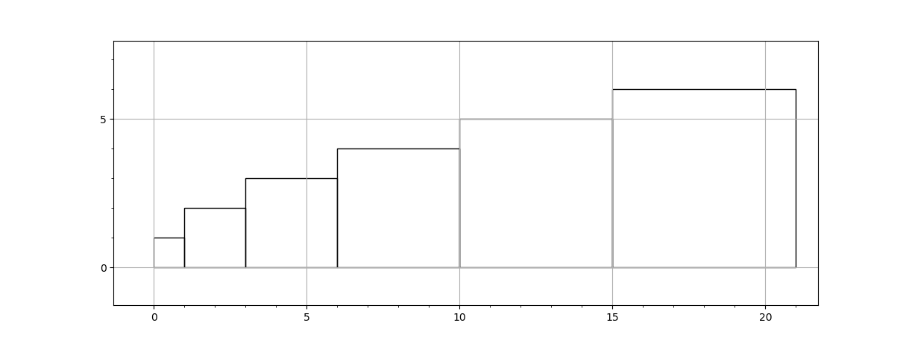
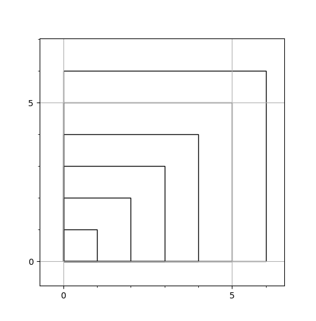

Project Euler problem 6¶
I stumbled across Project Euler (at Hacker Rank or at Project Euler) a while back, and it has been a low item on my to-do list for some time. It can be quite frustrating at first, but I find it rewarding each time I unlock a little piece of the mathematical puzzle. Of course you can cheat, but that completely defeats the purpose and harms no one but yourself. I hope I can demonstrate why with this example.
- On a side note, Hacker Rank typically penalizes you for brute force methods. They force you to really think about the problems.
Problem 6 asks, "Find the difference between the sum of the squares of the first one hundred natural numbers and the square of the sum." In other words, what is $$ \big|\big(\sum_1^n n\big)^2 - \big(\sum_1^n n^2\big)\big| $$
I was already familiar with Gauss's method of summing the first series of natural numbers. What I did not know how to do was to sum their squares. The brute force method will yield a result, but Hacker Rank will penalize you with a timeout if you go that route. I chose to dig deeper...
A row of boxes¶
Nothing beats a little chair time with pencil and paper. I suspected a strong link between geometry and the answer to this problem, so I started drawing squares on my graph paper.

If you are familiar with triangle numbers, you might notice the pattern of the right edge of each square. It is the series 1, 3, 6, 10, 15... It is really fascinating to me how these things relate to one another. The formula to find the nth triangle number is the same formula to find the sum of a series of natural numbers!
$$ \sum_1^n n=\frac{n(n+1)}{2} $$
Therefore, to find the area of the enclosing rectangle, we simply multiply the sum from above by our 'n'. Now, we need to account for all those little strips of triangle numbers that are left over on top of the squares. I have to admit, I spent quite a bit of time on this one and simply got stuck. I knew I needed to find another sum, but this time the series is the sum of the triangle numbers themselves. I needed to find a formula for the series 1, 4, 10, 20, 35...
Tetrahedral Numbers¶
EDIT: There is an off-by-one error below. I will rewrite this to clarify when I get time.
In an attempt to not ruin the learning process, I did an internet search for the mystery series. I immediately came across this article on tetrahedral numbers. This was my extra quantity! To find the sum of a series of squares, subtract the nth tetrahedral number from the area of the rectangle that overlays the boxes. Finally, the sum of a series of squares can be found by:
$$ \sum_1^n n^2=n * \frac{n(n+1)}{2} - \frac{n(n+1)(n+2)}{6} $$
Why does this matter?¶
Not to sound overly cliché, but it is easy, often too easy, to find answers to all of our questions at our fingertips. For example, if you want to cut right to the chase, you could have a look at this answer. Be sure to take a look at the proof as well. Both posts are respectable, but I think they hide the intuition in the formulas.
In my search for an answer I learned something new, and I also saw the problem in a new light not illustrated at either of the previous links. Pardon my drawing skills, but imagine the previous image as a stack of cubes, all laid on top of one another pushed to one side. Here's a top-down view of what I'm describing:

If you imagine the sum of squares as rows of stacked boxes, you can clearly see the relationship between the sum and the tetrahedral numbers from earlier (the missing space to be subtracted)!
I hope I have encouraged you to dig a little deeper the next time you run across a tricky math problem and to look for a deeper understanding of the fundamental forces that shape it.